|
I am an Associate Professor at the School of Future Science and Engineering at Soochow University (SUDA), where I am heading the Ecology and Innovation Center of Intelligent Driving (BeeLab). My work is in the intersection of computer vision, machine learning and autonomous driving, with the goal of making autonomous driving system more robust, reliable and safe in various environments. I was a Postdoc researcher at the MAGRIT team in INRIA (France). Later, I worked scientifically on computer vision and machine learning in Clobotics and Horizon Robotics. At Clobotics, I have worked on Smart Retail and Smart Wind with Dr. Yan Ke. At Horizon Robotics, I led the computer vision team and successfully delivered the intelligent cockpit (Changan UNI-T) based on Journey 2 SoC, making UNI-T the world's first massive-produced car using Chinese AI chips. I did my Ph.D. degree in computer vision and pattern recognition from the University of Siegen (Germany) in 2016, supervised by Prof. Dr. Marcin Grzegorzek. Email / CV / Bio / Google Scholar / Chinese Page / Github |
{kind=link}
|
My research interests include vision-related (also multimodal) perception algorithms in autonomous driving and robotic scenarios, particularly on optimizing algorithms on resource-limited edge devices. |
|
|
For an up-to-date list of my publications, please see my Google Scholar profile. |
|
Lectures
Theses
|
|
|
| 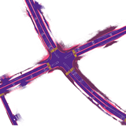 |
Jiaxin Zhang, Chen Shiyuan, Haoran Yin, Ruohong Mei, Xuan Liu, Cong Yang(*) and Wei Sui IEEE International Conference on Robotics and Automation (ICRA), 2024, pp 1-7. paper / video-YouTube / video-Bilibili / codes-GitHub
CAMA: Consistent and Accurate Map Annotation for Intelligent Driving. In use at Horizon Robotics for 4D annotation |
| 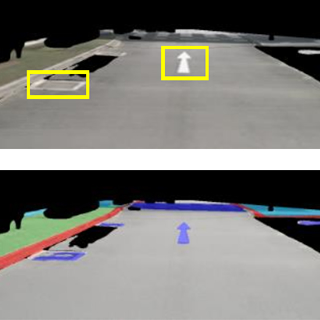 |
Ruohong Mei, Wei Sui, Jiaxin Zhang, Qian Zhang, Tao Peng, Cong Yang(*) arXiv, 2306.11368, 2023, pp 1-7. paper / video-YouTube / video-Bilibili / codes
A simple yet efficient method, RoMe, for largescale Road surface reconstruction via Mesh representations. In use at Horizon Robotics for 4D annotation |
| 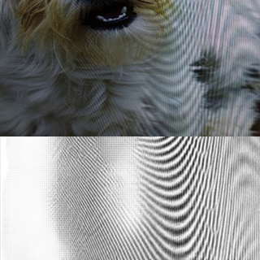 |
Cong Yang, Zhenyu Yang, Yan Ke, Tao Chen, Marcin Grzegorzek, John See IEEE Transactions on Image Processing, 32, 2023, pp 694-708. paper / video / codes / datasets
MoireDet algorothm for real-time Moiré Pattern Detection. MoireScape dataset for training and evaluating moiré pattern detection and removal. In use at Clobotics Smart Retail |
| 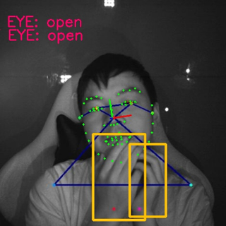 |
Cong Yang, Zhenyu Yang, Weiyu Li, John See IEEE Transactions on Intelligent Transportation Systems, 24, 2023, pp 233-246. paper / project page / codes / datasets
FatigueView is a new large-scale dataset for vision-based drowsiness detection, which is constructed for the research community towards closing the data gap behind the industry. In use at Changan UNI-T |
| 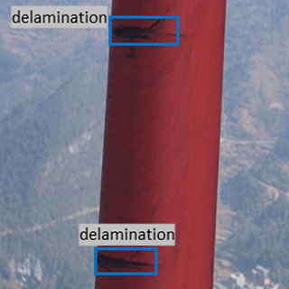 |
Cong Yang, Xun Liu, Hua Zhou, Yan Ke, John See Renewable Energy, 203, 2023, pp 267-279. paper / datasets
Blade30 contains 1,302 real drone-captured images covering 30 full blades captured under various conditions (both on- and off-shore), accompanied by a rich set of annotations such as defects and contaminations, etc. In use at Clobotics Smart Wind |
| 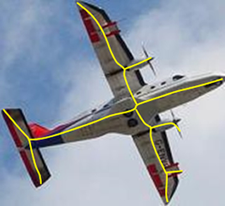 |
Yulu Zhang, Liang Sang, Marcin Grzegorzek, John See, Cong Yang(*) ACM International Conference on Multimedia, 2022, pp 5527–5536. paper / video / codes
BlumNet is a simple yet efficient framework for extracting object skeletons in natural images and binary shapes. BlumNet has significantly higher accuracy than the state-of-the-art AdaLSN (0.826 vs. 0.786) on the SK1491 dataset, a marked improvement in robustness on mixed object deformations, and also a state-of-the-art performance on binary shape datasets (e.g. 0.893 on the MPEG7 dataset). |
| 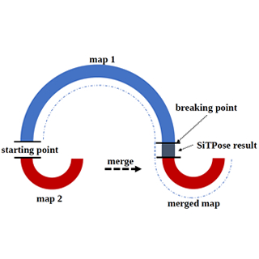 |
Kai Leng, Cong Yang(*), Wei Sui, Jie Liu, Zhijun Li (*) IEEE International Conference on Multimedia and Expo (ICME), 2023. paper / codes
SiTPose is a siamese convolutional transformer model to regress relative camera pose directly. |
| 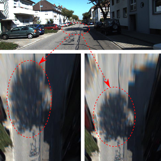 |
Jiaxin Zhang, Wei Sui, Qian Zhang, Tao Chen, Cong Yang(*) Sensors, 2022, 22(23), pp 9375. arXiv / codes
It uses odometry as input and estimates accurate ground plane normal vectors in real time. In use at Horizon Driving Solutions |
| 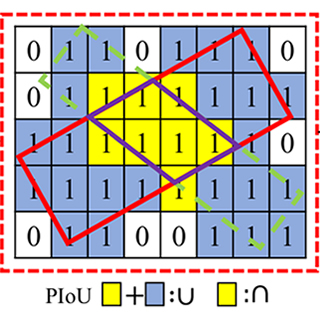 |
Zhiming Chen, Kean Chen, Weiyao Lin(*), John See, Hui Yu, Yan Ke, Cong Yang(*) European Conference on Computer Vision, 2020, pp 195-211. paper / codes
Pixels-IoU (PIoU) Loss is formulated to exploit both the angle and IoU for accurate oriented bounding box (OBB) regression. In use at Clobotics Smart Retail |
| 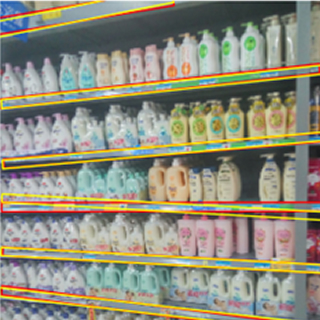 |
Retail50K is a collection of 47,000 images from different supermarkets. Annotations on those images are the layer edges of shelves, fridges and displays, for training and evaluating oriented bounding box (OBB) detectors. datasets download |
| 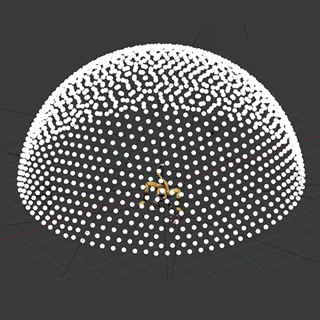 |
Cong Yang, Gilles Simon, John See, Marie-Odile Berger, Wenyong Wang Sensors, 2020, 20(11), pp 3045. paper / video / codes / Industrial10 Dataset
WatchPose is a simple yet efficient camera pose data collection method to improve the generalization and robustness of camera pose regression models. |
| 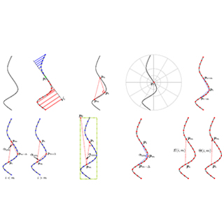 |
Cong Yang, Oliver Tiebe, Kimiaki Shirahama, Ewa Łukasik, Marcin Grzegorzek Machine Vision and Applications, 28, 2017, pp 373–391. paper / codes Datasets: ETHZ CS / MPEG7 CS-small / Sketching CS Source codes of 17 contour segment (CS) descriptors and 4 CS datasets. |
| 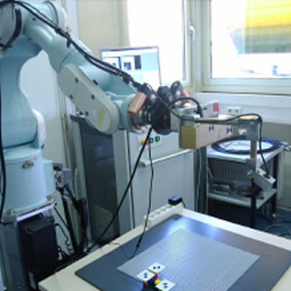 |
Oliver Tiebe, Cong Yang(*), Muhammad Hassan Khan, Marcin Grzegorzek, Dominik Scarpin Computer and Information Science, 656, 2016, pp 59-72. paper / codes
A 3D object matching framework based on stripes generated from laser scanning lines. |
| 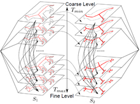 |
Cong Yang Oliver Tiebe, Kimiaki Shirahama, Marcin Grzegorzek Pattern Recognition, 55, 2016, pp 183-197. Pattern Recognition Letters, 2016, pp 251-260. project page: Hierarchical Skeleton / High-order Matching codes: Skeleton Graph / Audio Skeleton / Shape Trend |
| 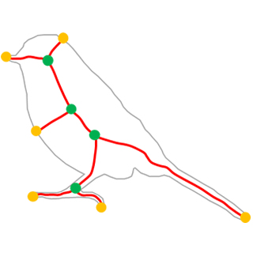 |
Asian Conference on Computer Vision (ACCV), 2014, pp 95-110. International Conference on Multimedia Retrieval (ICMR), 2015, pp 519-522. International Conference on Pattern Recognition (ICPR), 2014, pp 3374-3397. codes: Skeleton Pruning / SubBox / DCE Method datasets: MPEG400 Dataset / Tetrapod120 Dataset |

|
Cong Yang, Oliver Tiebe, Pit Pietsch, Christian Feinen, Udo Kelter, Marcin Grzegorzek International Conference on Image Processing (ICIP), 2014, pp 2202-2206. paper / Source Code (Java) / Documents |
| 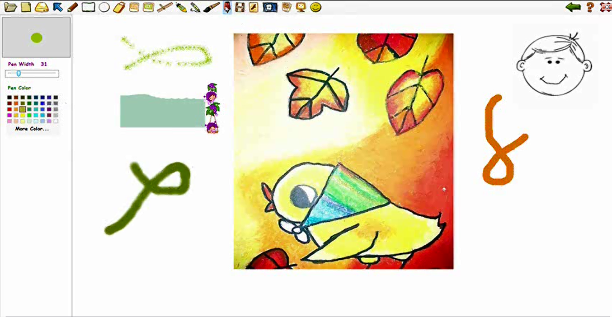 |
Cong Yang @ Imagine Cup 2010 slides / video / codes(C#) / hardware / users |
|
Cong Yang, Jue Hong, Cheng-Zhong Xu paper / video / codes |
|
Editor:
Program Committee:
Workshop Chair:
Reviewer:
|
|
This website is based on the source code of Jon Barron's website. |